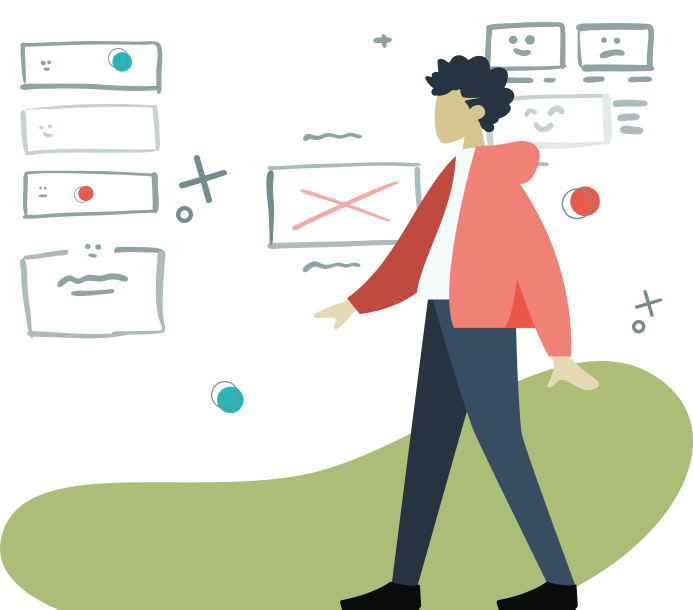

Cerramos la puerta a a la adicción y se la abrimos a la vida.
Conoce a las personas que están detrás de Addict Help. Descubre qué
nos mueve, qué buscamos con este proyecto y a qué nos comprometemos
contigo y con quienes más lo necesitan.

x
Cocaína: El primer paso hacia el cambio
La adicción a la cocaína puede hacerte sentir atrapado, pero el primer paso hacia el cambio es posible y está a tu alcance. Reconocer que existe un problema es fundamental: no eres débil por admitirlo, al contrario, es un acto de valentía. Miles de personas en España pasan por lo mismo; de hecho, la cocaína es la droga ilegal que provoca más admisiones a tratamiento en el país (casi un 47% del total). Esto significa que muchas personas, como tú, ya han dado el paso de buscar ayuda. No estás solo en este camino.
Dejar la negación atrás. Es común pensar “yo controlo” o restarle importancia al consumo. El actor Eduard Fernández confesó que “tardó tiempo en ver que tenía un problema… un adicto tiene que pedir ayuda, hacer el acto de humildad y decir ‘ayúdame, que yo no puedo’”. Salir de la negación duele, pero marca el inicio de tu recuperación. Significa que comienzas a romper el círculo vicioso. Pide ayuda: a un amigo de confianza, a un familiar, o un profesional. Dar ese paso abre la puerta a las soluciones.
Apóyate en quienes te quieren. Un ejemplo cercano lo encontramos en Kiko Rivera, personalidad española que habló abiertamente de su adicción a las drogas. Al hacer pública su problema se sintió liberado y reconoció que su esposa fue clave para impulsarlo a salir del “hoyo” en el que estaba. Su ser querido sufría junto a él, pero no se rindió. Le tendió la mano el día que “hasta aquí” y lo acompañó en el inicio del cambio. Rodéate de personas que te apoyen y te mantengan motivado en los días más difíciles. Eso te dará el primer paso aún si no puedes solo.
Hoy puede ser tu día uno. Aunque la cocaína genera una dependencia poderosa, cada historia de recuperación empieza con una decisión valiente: “ya basta”. Por dura que sea tu montaña, miles la han escalado. Las estadísticas son esperanzadoras: 3 de cada 4 personas que inician una adicción logran recuperarse con el tiempo. Es un camino que requiere esfuerzo y constancia, pero vale la pena. Imagínate recuperar tu salud, tus relaciones y tus sueños. El primer peldaño es el más importante. Hoy es un buen día para comenzar el cambio.
Referencias (APA)
El Debate. (2023, abril 17). Eduard Fernández, sobre su adicción: “Un adicto tiene que pedir ayuda, hacer el acto de humildad y decir ‘ayúdame, que yo no puedo’”. https://www.eldebate.com
National Public Radio (NPR). (2020, marzo 6). Most people with addiction recover. They also want you to know it’s not weakness. https://www.npr.org
Plan Nacional sobre Drogas (PNSD). (2023). Indicadores y estadísticas sobre tratamientos por consumo de sustancias en España. Ministerio de Sanidad. https://pnsd.sanidad.gob.es
Telecinco. (2023, mayo 9). Kiko Rivera relata su lucha contra las drogas: “Mi mujer fue quien me dijo ‘hasta aquí’”. https://www.telecinco.es
Blog
Recursos, historias y claves reales para tu recuperación
En este blog compartimos lo que a nosotros nos habría gustado saber
cuando empezamos: información clara, herramientas prácticas y
reflexiones honestas que pueden ayudarte, estés donde estés en tu
proceso
Cocaína: El primer paso hacia el cambio
La adicción a la cocaína puede hacerte sentir atrapado, pero el
primer paso hacia el cambio es posible y está a tu alcance.
Reconocer que existe un problema es fundamental: no eres débil
por admitirlo, al contrario, es un acto de valentía. Seguir
leyendo
Alcoholismo: un camino de esperanza hacia la recuperación
El alcohol forma parte de nuestra cultura, por eso admitir una
adicción al alcohol puede ser tan difícil. Seguir leyendo
Ludopatía: el impacto en la familia y cómo romper el círculo
vicioso
La ludopatía (adicción al juego) es una adicción silenciosa que
destruye economías familiares, relaciones y la paz en el hogar.
Seguir leyendo
Acompañar sin perderte: cómo apoyar a un ser querido con
adicción
Cuando alguien a quien amas tiene una adicción, toda la familia
sufre. Ves a tu ser querido autodestruirse y naturalmente
quieres ayudar. Seguir leyendo
¡Suscríbete a nuestra newsletter!
Recibe las últimas novedades sobre Addict Help y más.
TESTIMONIOS
Personas que nos conocen, personas que confían
Sus palabras nos emocionan, nos definen y nos empujan a seguir. Esto
es lo que opinan quienes han conocido el origen de Addict Help
Conozco a los 3 y sé que están haciendo un gran trabajo. Son muy
profesionales y seguro que harán todo lo posible para conseguir
los objetivos.
Jesús - Adicto en recuperación
He visto su plan para la APP y es algo extraordinario. ¡¡Va a
ayudar a muchísima gente!!